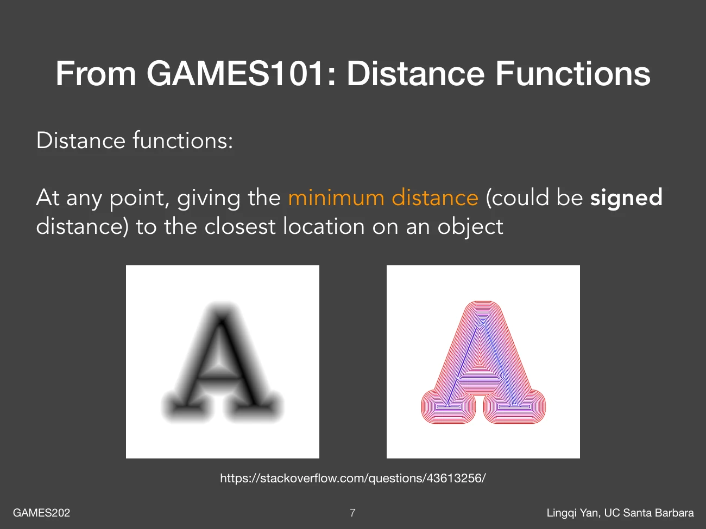
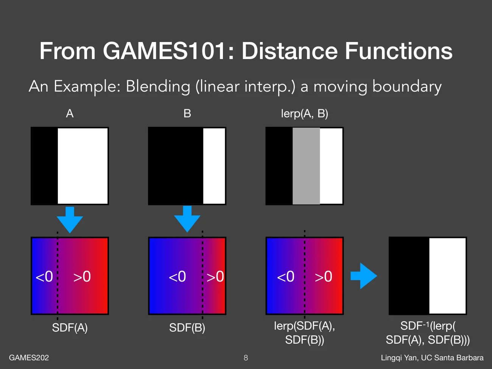
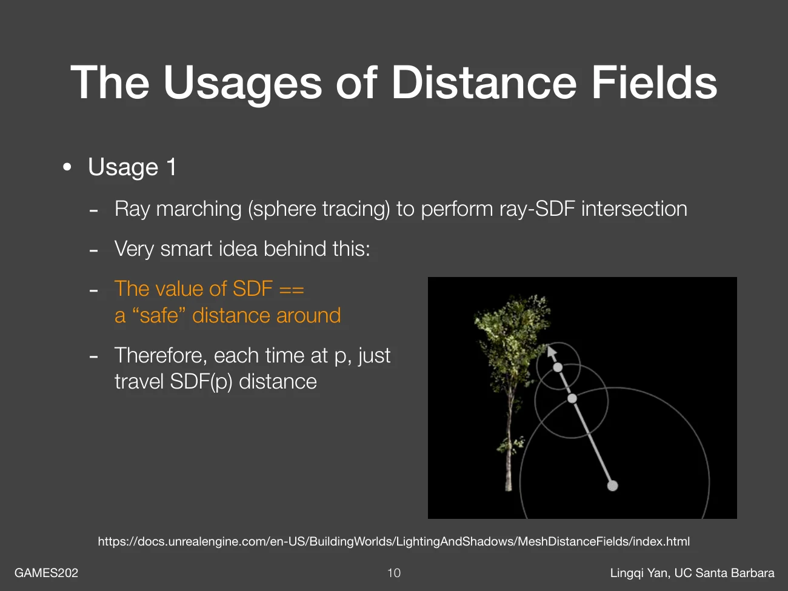
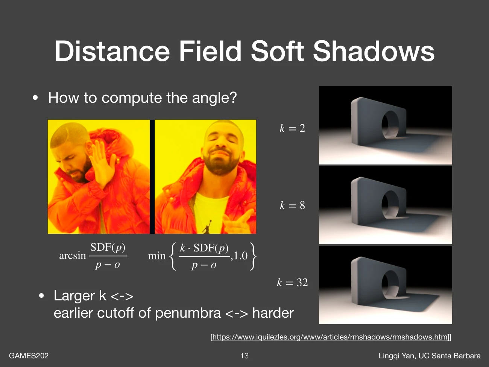
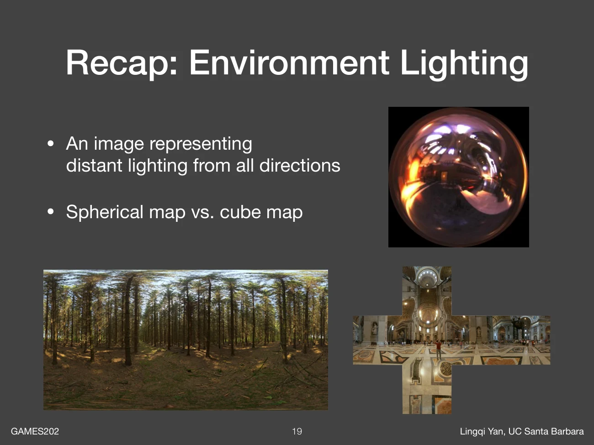
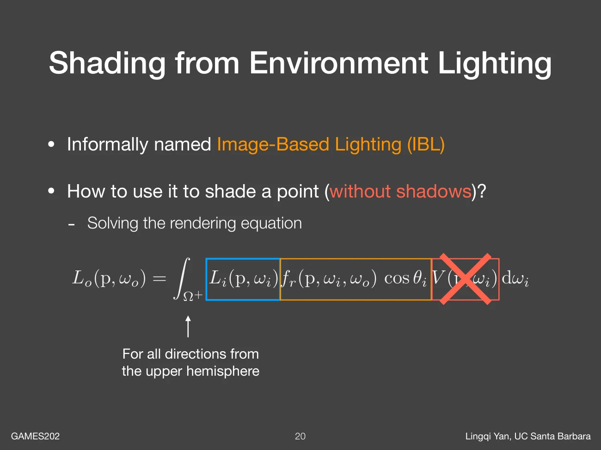
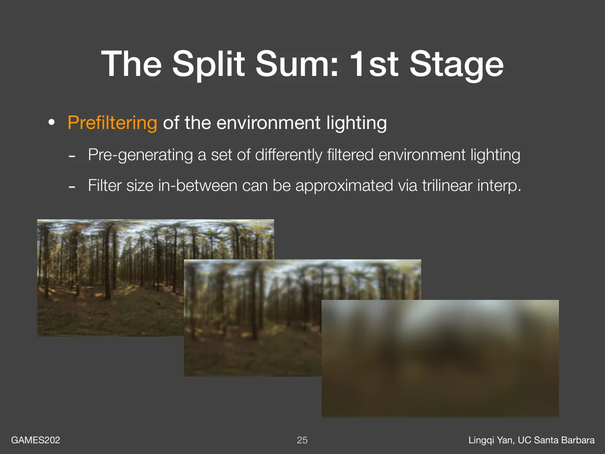
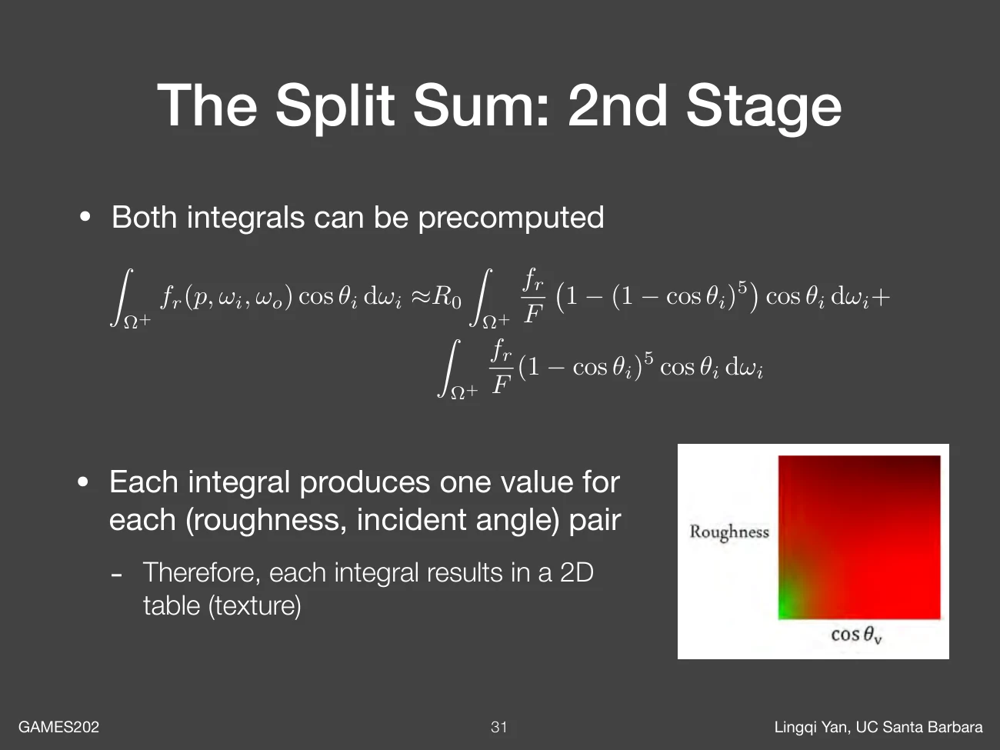
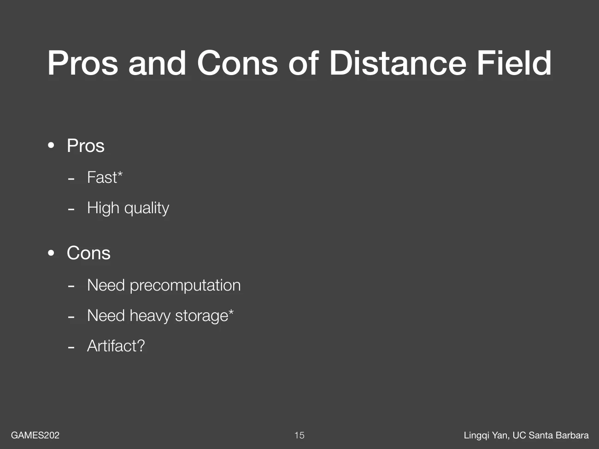

第 5 讲：实时环境光照与距离场软阴影
用预计算把环境光着色变成两次查表，用距离场把软阴影变成射线步进
◆ 学完这一讲，你应该能
理解距离场（SDF）的定义与基本性质，能解释为什么可以用它做射线步进求交
掌握用距离场估算软阴影可见性的方法，能写出安全角度与阴影硬度的关系
理解环境光照下渲染方程的困难，能说明为什么直接蒙特卡洛积分在实时中不可行
掌握拆分求和（Split Sum）近似的两个阶段，能推导并解释预过滤环境贴图与 BRDF 查找表的作用
能联系 UE/Unity 中的反射捕获、光照贴图、距离场阴影等实际功能
核心结论速记
距离场（SDF）给出空间中任意点到最近物体表面的最小距离（可带符号），是射线步进和软阴影的基础。
距离场软阴影的核心：沿射线步进时，用 SDF 值估算从眼睛看过去的安全角度，取最小值作为可见性度量；安全角度越小，阴影越硬。
环境光照着色需要求解渲染方程，直接蒙特卡洛采样太慢；利用 BRDF 的局部性（glossy 支撑小、diffuse 平滑）可以做大近似。
拆分求和近似第一步：把光照项从积分中提出，对环境贴图按不同粗糙度预过滤，运行时按反射方向查表并三线性插值。
拆分求和近似第二步：将微表面 BRDF 的 Fresnel 项用 Schlick 近似拆开，把 base color 提出，剩余部分预计算成关于粗糙度和入射角的二维查找表。
拆分求和完全避免了运行时采样，速度极快且结果与参考几乎一致，是工业界 IBL 的标准做法。
距离场方法优点是快且质量高，缺点是需要预计算、存储量大，且可能产生伪影。
011. 距离场：把几何变成一张标量场
距离场（Distance Field）是这一讲前半部分的核心工具。它的定义很直白：空间中任意一点 \(\mathbf{p}\)，距离场给出该点到物体表面最近点的距离；如果带符号（Signed Distance Field, SDF），则物体内部为负、外部为正（或相反约定）。
为什么距离场有用？因为它把「离表面多远」这个几何查询变成了一个标量函数求值。在渲染中我们经常需要回答「这条射线会不会撞到东西」「这个点被遮挡了多少」，距离场提供了一种保守而高效的近似。
距离场有一个很好的性质：可以对两个距离场做线性插值，得到形状的平滑过渡。课件里用移动边界举例：\(\text{lerp}(\text{SDF}(A), \text{SDF}(B))\) 再取零等值面，就能得到 A 到 B 的形变。这个性质在建模和动画中有用，也说明距离场是一种「可混合」的几何表示。
但要注意：距离场是标量场，它不记录法线、材质等信息；而且存储整个三维空间的距离场需要大量内存，通常用三维纹理或自适应结构来存。


常见坑
把距离场当成精确几何 → 距离场是采样/近似的，分辨率不够时细节丢失 → 检查三维纹理分辨率或自适应结构。
忽略符号约定 → 内外正负搞反会导致射线步进方向错误 → 统一约定（通常外部为正）。
UE / Unity 落地
UE 的 Mesh Distance Fields 在项目设置中开启，用于距离场阴影、DFAO 等；每个静态网格体生成距离场体素。
Unity 没有内置通用距离场，但 HDRP 的 Ray Tracing 或自定义 SDF 渲染需要手动生成距离场纹理。
022. 用距离场做射线步进（Sphere Tracing）
距离场最直接的用法是射线与场景求交。传统求交需要遍历三角形，而用距离场可以做「球体追踪」（Sphere Tracing）：从射线起点 \(\mathbf{o}\) 出发，沿方向 \(\mathbf{d}\) 步进。在当前位置 \(\mathbf{p}\)，距离场值 \(\text{SDF}(\mathbf{p})\) 告诉我们以 \(\mathbf{p}\) 为球心、半径 \(\text{SDF}(\mathbf{p})\) 的球内一定没有表面。因此可以安全地前进 \(\text{SDF}(\mathbf{p})\) 的距离，即 \(\mathbf{p} \leftarrow \mathbf{p} + \mathbf{d} \cdot \text{SDF}(\mathbf{p})\)。重复直到距离小于阈值（命中）或超过最大距离（未命中）。
这个想法非常聪明：每一步都走「安全距离」，所以不会穿透表面。步数取决于场景和起点，通常比固定步长快得多。
在软阴影中，我们不需要精确求交，而是利用步进过程中收集的信息来估算遮挡。课件指出：SDF 值可以看作从眼睛看过去的「安全角度」——距离越大，安全角度越大，说明越不容易被遮挡。

常见坑
步进距离没有乘以方向向量归一化 → 如果方向未归一化，步长会错误 → 确保射线方向是单位向量。
阈值设得太大 → 表面细节丢失或穿透 → 减小阈值或增加最大步数。
UE / Unity 落地
UE 的距离场阴影使用类似步进的思想；在材质中可以用 DistanceField 节点做自定义效果。
Unity 的 Shader Graph 没有内置 SDF 步进，需要写 HLSL。
球体追踪伪代码（hlsl）
float3 p = rayOrigin;
float t = 0;
for (int i = 0; i < MAX_STEPS; ++i) {
float d = SDF(p);
if (d < EPSILON) return hit;
t += d;
p = rayOrigin + t * rayDir;
if (t > MAX_DIST) break;
}
return miss;033. 距离场软阴影：安全角度与可见性
软阴影的关键是半影（penumbra）。用距离场可以估算每个着色点被遮挡的程度：从眼睛（或光源）出发沿射线步进，每一步计算一个「安全角度」\(\theta\)，它表示以当前点为中心、半径 \(\text{SDF}(\mathbf{p})\) 的球对观察点所张的角度。角度越大，说明周围越空旷，可见性越高；角度越小，说明越接近遮挡物，阴影越硬。
课件给出的角度计算公式为： \[ \theta = \arcsin\left( \frac{\text{SDF}(\mathbf{p})}{\|\mathbf{p} - \mathbf{o}\|} \right) \] 其中 \(\mathbf{o}\) 是观察点（眼睛），\(\mathbf{p}\) 是当前步进点。实际实现中常用近似： \[ \theta \approx \frac{\text{SDF}(\mathbf{p})}{\|\mathbf{p} - \mathbf{o}\|} \] 因为当角度较小时 \(\arcsin x \approx x\)。
为了控制阴影硬度，引入参数 \(k\)： \[ \theta = \arcsin\left( \frac{\text{SDF}(\mathbf{p})}{k \cdot \|\mathbf{p} - \mathbf{o}\|} \right) \] \(k\) 越大，安全角度越小，半影越早截断，阴影越硬；\(k\) 越小，阴影越软。
沿射线步进时，记录所有步中安全角度的最小值（或对可见性取最小），最终得到该点的可见性因子。这个因子用于缩放光照，就得到软阴影。

常见坑
没有对距离归一化 → 角度计算错误 → 确保除以 \(\|\mathbf{p}-\mathbf{o}\|\)。
k 值固定不变 → 不同场景阴影硬度不匹配 → 根据场景尺度调整 k。
步进次数太少 → 漏掉遮挡物 → 增加步数或使用自适应步进。
UE / Unity 落地
UE 的距离场阴影（Distance Field Shadows）在光源设置中启用，可调节阴影硬度。
Unity 没有内置距离场软阴影，但 HDRP 的接触阴影（Contact Shadows）使用类似思想。
044. 环境光照：IBL 与渲染方程
环境光照（Environment Lighting）用一张全景图表示来自所有方向的远处光照，通常存为球面贴图（Spherical Map）或立方体贴图（Cube Map）。用环境光照来着色一个点，称为基于图像的光照（Image-Based Lighting, IBL）。
着色需要求解渲染方程： \[ L_o(\mathbf{p}, \omega_o) = \int_{\Omega^+} L_i(\mathbf{p}, \omega_i) f_r(\mathbf{p}, \omega_i, \omega_o) \cos\theta_i V(\mathbf{p}, \omega_i) \, d\omega_i \] 其中 \(\Omega^+\) 是上半球。忽略阴影时 \(V=1\)。
直接求解这个积分通常用蒙特卡洛积分，但需要大量样本，在实时渲染中太慢。课件指出：在着色器中做采样通常不是首选。
观察：如果 BRDF 是 glossy 的，它的支撑很小（只有镜面反射方向附近有值）；如果是 diffuse 的，它很平滑。这提示我们可以利用 BRDF 的局部性做近似。


常见坑
直接对每个着色点做蒙特卡洛积分 → 噪声大、性能差 → 改用预计算近似。
环境贴图分辨率过高 → 采样开销大 → 使用预过滤的 mipmap。
UE / Unity 落地
UE 的 Sky Light 使用立方体贴图作为环境光照，支持实时捕获和预计算。
Unity 的 Reflection Probe 捕获环境到立方体贴图，用于 IBL。
055. 拆分求和近似：把积分拆成两次查表
拆分求和（Split Sum）是 IBL 的经典近似，分两步。
第一步：提出光照项。 利用 BRDF 的局部性，把光照项 \(L_i\) 从积分中提出： \[ \int_{\Omega^+} L_i(\mathbf{p}, \omega_i) f_r(\mathbf{p}, \omega_i, \omega_o) \cos\theta_i \, d\omega_i \approx \left( \int_{\Omega^+} L_i(\mathbf{p}, \omega_i) \, d\omega_i \right) \cdot \left( \int_{\Omega^+} f_r(\mathbf{p}, \omega_i, \omega_o) \cos\theta_i \, d\omega_i \right) \] 这个近似在 BRDF 支撑小或光照平滑时较准确。
实现上，对每个粗糙度级别预过滤环境贴图（prefiltered environment map），运行时根据反射方向 \(\mathbf{r}\) 和粗糙度查表，粗糙度介于两级之间时用三线性插值。
第二步：处理剩余积分。 第二个积分 \(\int f_r \cos\theta_i \, d\omega_i\) 仍然需要计算。利用微表面 BRDF 和 Schlick 近似： \[ F(\omega_i, \mathbf{h}) \approx F_0 + (1 - F_0)(1 - \cos\theta_i)^5 \] 把 \(F_0\)（base color）提出，剩余部分只依赖于粗糙度和入射角 \(\theta_i\)。因此可以预计算一张二维查找表（LUT），两个通道分别存储两个积分项。运行时用粗糙度和 \(\cos\theta_i\) 查表，再与 \(F_0\) 组合。
最终，整个环境光照着色变成两次纹理查找，完全避免了采样。


常见坑
预过滤时没有考虑余弦权重 → 结果偏差 → 使用重要性采样或余弦加权。
查找表分辨率太低 → 插值误差大 → 使用 128x128 或更高。
忽略 Fresnel 的 Schlick 近似误差 → 掠射角不准 → 可接受，或使用更精确的 Fresnel。
UE / Unity 落地
UE 的 Sky Light 和 Reflection Capture 使用拆分求和近似；材质中的 Reflection Vector 节点配合预过滤贴图。
Unity 的 HDRP 的 Lit Shader 使用预过滤环境贴图和 BRDF LUT。
066. 距离场的优缺点与工业应用
距离场方法在实时渲染中有明显优势：速度快（步进次数远少于三角形遍历）、质量高（软阴影自然）。但缺点也很突出：需要预计算（生成距离场）、存储量大（三维纹理），且可能产生伪影（分辨率不足、步进误差）。
工业界已经广泛应用：UE 的 Mesh Distance Fields 用于距离场阴影和环境光遮蔽；一些独立游戏开发者用距离场做角色渲染和软阴影。课件还提到距离场用于无限分辨率文字渲染（有符号距离场字体）。
选择是否使用距离场，需要权衡预计算成本、内存和效果。对于静态场景，距离场很划算；对于动态物体，需要每帧更新距离场，成本较高。

常见坑
动态物体使用距离场 → 每帧更新开销大 → 限制动态物体或使用其他方法。
距离场分辨率不足 → 细节丢失、阴影漏光 → 提高分辨率或使用自适应结构。
UE / Unity 落地
UE 在项目设置中开启 Generate Mesh Distance Fields，静态网格体自动生成距离场。
Unity 没有内置距离场，但可以用第三方插件或自定义生成。
引擎对照表
| 概念 / 效果 | Unreal Engine | Unity |
|---|---|---|
环境光照捕获 | Sky Light + Reflection Capture | Reflection Probe + Skybox |
预过滤环境贴图 | Reflection Capture 的 Cubemap 预过滤 | Reflection Probe 的 Cubemap 预过滤 |
BRDF 查找表 | 内置 BRDF LUT | HDRP 内置 BRDF LUT |
距离场软阴影 | Distance Field Shadows（光源设置） | 无内置，可用 HDRP 接触阴影近似 |
距离场环境光遮蔽 | Distance Field AO | 无内置 |
术语双语表
| English | 中文 | 说明 |
|---|---|---|
| Signed Distance Field (SDF) | 有符号距离场 | 空间中任意点到最近物体表面的最小距离，内部为负外部为正。 |
| Sphere Tracing | 球体追踪 | 利用距离场的安全距离进行射线步进求交的方法。 |
| Penumbra | 半影 | 软阴影中部分被遮挡的区域。 |
| Image-Based Lighting (IBL) | 基于图像的光照 | 用环境贴图作为光源照亮场景的技术。 |
| Split Sum Approximation | 拆分求和近似 | 将环境光照积分拆成光照预过滤和 BRDF 查找表两步的近似方法。 |
| Prefiltered Environment Map | 预过滤环境贴图 | 按不同粗糙度模糊后的环境贴图，用于快速查询。 |
| BRDF LUT | BRDF 查找表 | 预计算的双通道纹理，存储 BRDF 积分结果，按粗糙度和入射角查询。 |
| Microfacet BRDF | 微表面 BRDF | 用微表面理论描述材质反射的模型，包含 Fresnel、NDF 和几何项。 |
| Schlick's Approximation | Schlick 近似 | Fresnel 项的近似公式，用 \(F_0\) 和 \((1-\cos\theta)^5\) 表示。 |
课后练习
01 解释距离场软阴影中参数 k 的作用，并说明 k 增大时阴影变硬还是变软。
查看答案
提示：
看安全角度公式。
k 出现在安全角度公式 \(\theta = \arcsin(\text{SDF}(\mathbf{p}) / (k \cdot \|\mathbf{p}-\mathbf{o}\|))\) 的分母中。k 越大，安全角度越小，半影越早截断，阴影越硬；k 越小，阴影越软。
02 拆分求和近似中，第一步把光照项提出积分，这个近似在什么条件下比较准确？
查看答案
提示：
考虑 BRDF 的支撑和光照的平滑性。
当 BRDF 的支撑很小（如 glossy 材质）或光照变化很平滑（如 diffuse 材质）时，近似较准确。因为此时积分域内 BRDF 或光照近似为常数，可以提出。
03 为什么拆分求和的第二步需要预计算一张二维查找表？表中每个像素存储什么？
查看答案
提示：
利用 Schlick 近似把 Fresnel 项拆开。
第二步的积分 \(\int f_r \cos\theta_i d\omega_i\) 依赖于粗糙度和入射角，但通过 Schlick 近似可以把 \(F_0\) 提出，剩余部分只与粗糙度和入射角有关。因此预计算一张二维表，每个像素存储两个积分值（对应 \(F_0\) 的系数和常数项），运行时用粗糙度和 \(\cos\theta_i\) 查表。
04 在 UE 中如何启用距离场阴影？简述步骤。
查看答案
提示：
项目设置和光源设置。
在项目设置中开启 Generate Mesh Distance Fields；在光源（如 Directional Light）的细节面板中勾选 Distance Field Shadows；调整 Distance Field Shadow Distance 等参数。
05 距离场方法有哪些主要缺点？如何缓解？
查看答案
提示：
预计算、存储、伪影。
缺点：需要预计算、存储量大、可能产生伪影。缓解：对静态物体使用距离场，动态物体用其他方法；提高距离场分辨率或使用自适应结构；调整步进参数减少伪影。